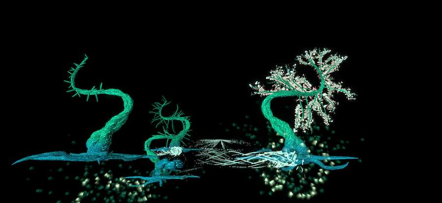
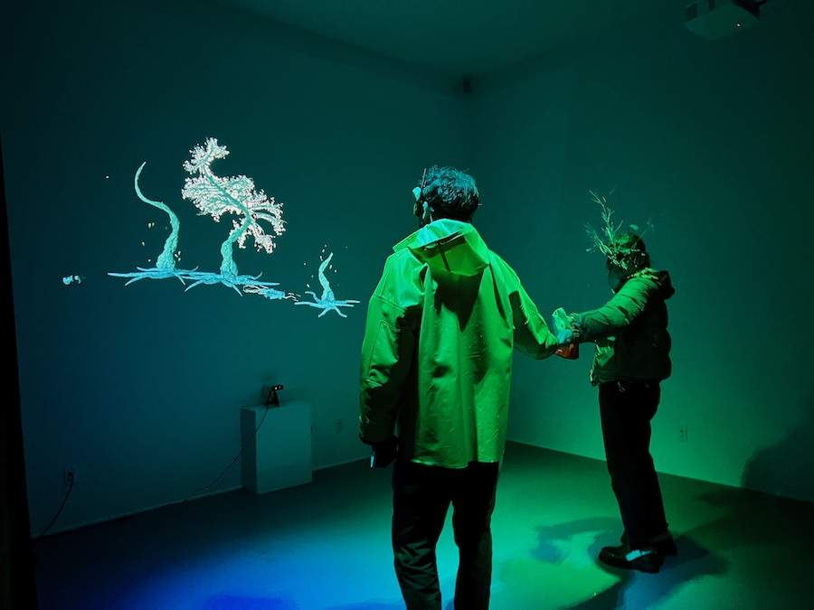
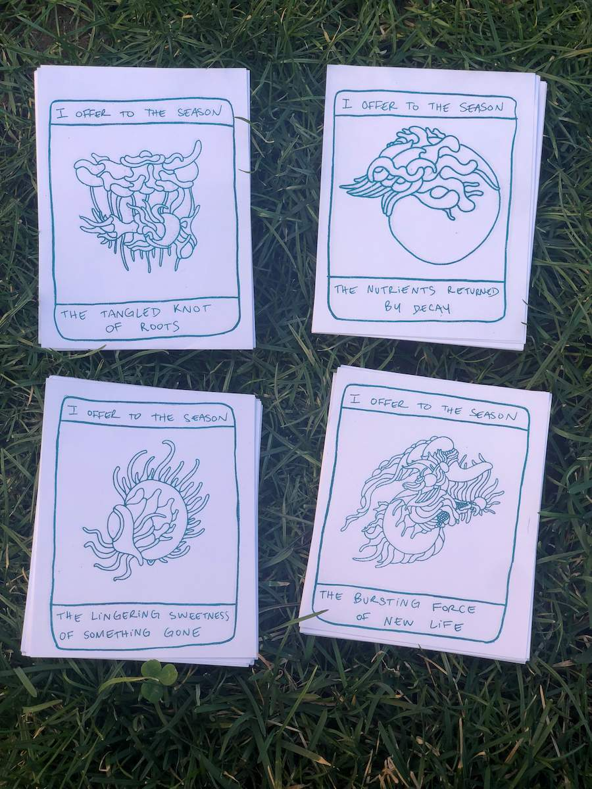
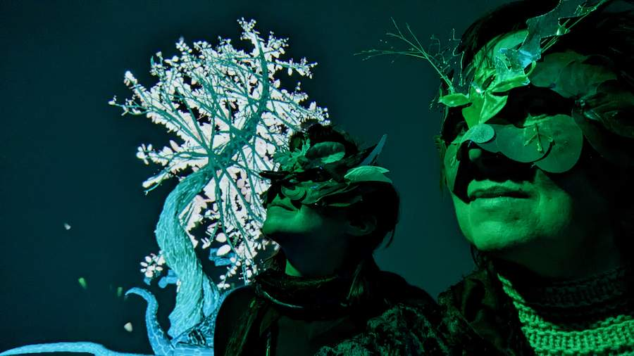
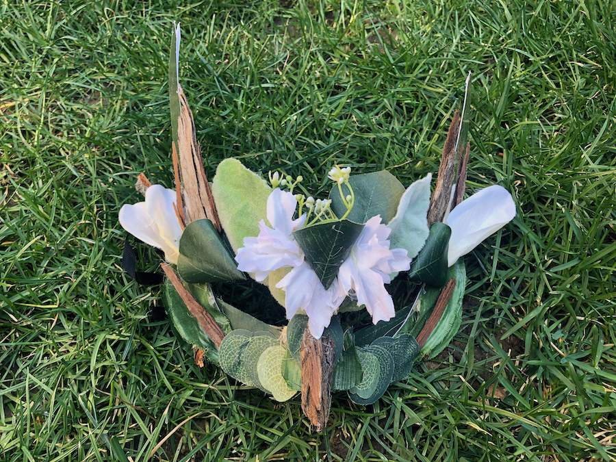
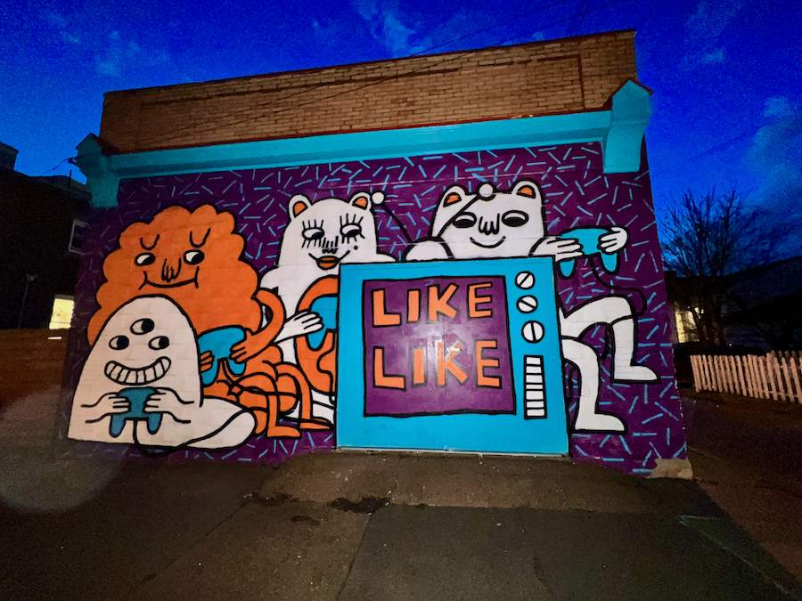

Grow Still
A game-poem
A game-poem by experimental game developers Marie LeBlanc Flanagan and Heather Kelley. Belonging can’t be rushed. Take time to root and reach. Sustenance flows from those who have come before, with those around us, and to those who come after.
Reverence, coregulation, copresence, collective, curiosity, gentle connection, sharing energy, a grove, cyclical (not linear), contemplative, slow down, place, taking time to root, putting down roots, spread branches, mycelial, grow together, ritual masking, social masking, masking as revelation, collaborative accumulations, becoming something else to belong here, moss, weeds, trees, wisps.
Every time a person walks into the room and stands still, a tree begins to grow. As the person continues to stand still, their tree continues to grow, roots or tendrils emerge towards any other players and mycelium particles float towards each of them. The sound is harmonic, deep, reverent, with gentle waves of sound. Each tree has its own sound, coming together to create harmonies.
But if the person moves, their tree-avatar begins to shrink, and the roots retreat and dissolve. If a person grows a tree to completion, the process of decay is much slower, and the process of decay feeds new trees and new life.
 Walkthrough
Preparation
I enter the space. It’s dark, and I move down a narrow corridor to the person waiting for me.
The music in the space is somewhat hypnotic and spacey. It makes me feel peaceful and reverent.
A warmly and softly-lit table at the entrance contains a collection of beautiful mysterious masks that look like natural textures but hand-made. All are slightly different in shape and natural textures.
Invitation
A masked person welcomes me and invites me to put on a mask.
I am taken to the opening in some drapes but not permitted to look or walk through until another visitor leaves the grove.
When it is my time I am ushered by a guide through the curtains.
Threshold
I enter the projected area and see the projected world. It is organic, growing, flowy soft focus. In front of me I see a projection of a grove of illustrated trees. There are some trees around the edges of the screen/view, and a few trees in the middle, some of them are darker than others. I don’t know it but these are trees from people who came before.
There are two people in the room, both are also wearing masks like mine. One of them is standing looking at the screen while the other one is walking around the space looking at the screen and waving their arms.
In front of the person standing still, an image of a tree is becoming more visible, darker, more solid.
In the projection across from the person walking around the room waving their arms, a very faint swirling mist-like material seems to be following their movements.
I notice that the roots of the trees on the edge are appearing to grow and extend, and seem to reach out toward the tree-form of the person standing still. The corresponding tree of the person standing still is also growing more lateral roots. Small sparkling particles are passing underground from the extending roots of both trees and passing to the trunks of the others.
Open Portal
I decide to stand still in an unoccupied space in the room. As I stand there I notice in the projection in front of me a column is forming, with the tree-like pattern appearing over it. Leaves appear above my head.
Deepening
I keep standing still and notice that small sparkles from the other trees are coming toward me and entering through my feet/roots, up my legs/trunk and into my branches (going through and up from where my head is).
I move my arms to take a picture and notice the motion creates the same faint swirling mist that I saw earlier when watching the person who walked around the space.
As I wait, the person who was standing here before me walks toward the exit, followed by their own trail of mist. In the place where they stood, the tree remains, but begins to fade out slowly, starting at the top and gradually fading downward.
The sparkles from that person’s tree become less active but still a few continue, and will until the tree is completely gone.
Close Portal
After a minute or so of watching the new person’s tree start to grow, and the departed person’s tree fade out, and all our trees exchange sparkles, I decide it’s time to leave the forest and I turn and walk toward the exit.
Exit
A host at the exit takes my mask and gently places it on the table. They give me an offering. They give me a feeling of closure and care. They show me the way toward the Garden, or I can go back to the street entrance.
Emergence
I go to the garden and I find a fire pit and people chatting about the experience.
Beyond
Credits:
By Marie LeBlanc Flanagan and Heather Kelley, Targy Feng (dev), Abhijeet Singh Malhi technical artist, modeler, Ellie zine creation, mask lead
Special thanks to: Paolo Pedercini, Tenley Schmida, Jeff Lindsay, Drew Davidson, Steve Audia, Smokey Dyar, Andrés Cuervo, Golan Levin, Mark Latimer, Jon Underwood, Dave Purta, Claire Hentschker, Spencer Liberto, ETC Dynamic Luminescence team, and likelike.
